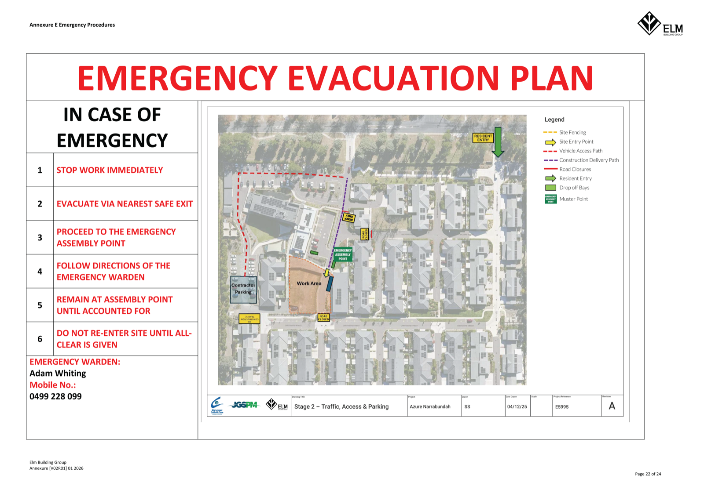

iOS Safari de-risk test. Scroll the whole page as one, then complete &
submit the form below. Checklist: iOS_Safari_Embed_Test.md.
Site Rules
- All workers must hold a current White Card and be inducted before entering site.
- PPE (hard hat, hi-vis, steel-cap boots) is mandatory at all times.
- Sign in on arrival and sign out on departure via the QR poster.
- In an emergency, proceed to the assembly point shown on the site plan below.
- Report all incidents and near-misses to the Site Manager immediately.
Site Plan (incl. Evacuation)

↓ Complete your induction below ↓